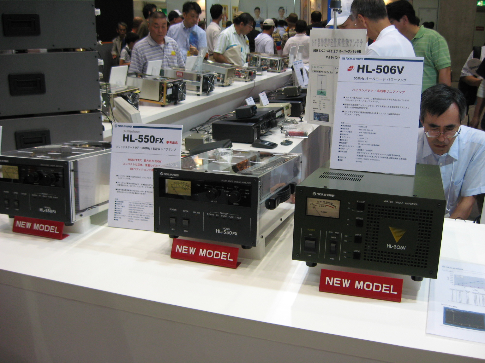

(左)135KHzバンドのデモ中のFEDXPのブース
東京ハイパワーのブースは6m・リニアーのNEW MODELに注目が集まった
| Flash Back ! |
[Back Issues Aug.2009]
TIME:UTC(JST-09:00)
Report from JA1RJU(PM95sq)
31.Aug.2009(15:00c)
Report from JA1RJU(PM95sq)
30.Aug.2009(15:00c)
BD4JWU 03:14 50.110 CW CQing
Report from JA1RJU(PM95sq)
29.Aug.2009(15:00c)
VR2SIX/b 01:20- 50.075 CW Beacon
BV2YA/b 08:05- 50.001 CW Beacon
VR2SIX/b 09:27- 50.075 CW Beacon
Report from JA1RJU(PM95sq)
28.Aug.2009(15:00c)
BV2YA/b 04:34- 50.001 CW Beacon
VR2SIX/b 05:10- 50.075 CW Beacon
AH2G/B 06:28 50.0045 CW Beacon (Guam Is.)
VR2SIX/b 08:55- 50.075 CW Beacon
Report from JA1RJU(PM95sq)
27.Aug.2009(15:00c)
BV2YA/b 01:24- 50.001 CW Beacon
Report from JA1RJU(PM95sq)
26.Aug.2009(15:00c)
BV2YA/b 01:40- 50.001 CW Beacon
Report from JA1RJU(PM95sq)
25.Aug.2009(15:00c)
BV2YA/b 01:45- 50.001 CW Beacon
Report from JA1RJU(PM95sq)
24.Aug.2009(15:00c)
Report from JA1RJU(PM95sq)
23.Aug.2009(15:00c)
◎ ハムフェア2009(10:00～17:00)
Report from JA1RJU(PM95sq)
22.Aug.2009(15:00c)
◎ ハムフェア2009(10:00～17:00)

Report from JA1RJU(PM95sq)
21.Aug.2009(15:00c)
Report from JA1RJU(PM95sq)
20.Aug.2009(15:00c)
BV2YA/b 02:30- 50.001 CW Beacon
VR2SIX/b 02:30- 50.075 CW Beacon
VR2SIX/b 07:50- 50.075 CW Beacon still good !
Report from JA1RJU(PM95sq)
19.Aug.2009(15:00c)
BV2YA/b 05:35- 50.001 CW Beacon
VR2SIX/b 05:35- 50.075 CW Beacon
Report from JA1RJU(PM95sq)
18.Aug.2009(15:00c)
VR2SIX/b 02:45- 50.075 CW Beacon
Report from JA1RJU(PM95sq)
17.Aug.2009(15:00c)
Report from JA1RJU(PM95sq)
16.Aug.2009(15:00c)
Report from JA1RJU(PM95sq)
15.Aug.2009(15:00c)
BV2YA/b 01:15- 50.001 CW Beacon
VR2SIX/b 01:15- 50.075 CW Beacon
Report from JA1RJU(PM95sq)
14.Aug.2009(15:00c)
BV2YA/b 01:45- 50.001 CW Beacon
VR2SIX/b 02:20- 50.075 CW Beacon
BA8AG/4 07:29 50.100 CW IOTA AS-136
BV2YA/b 08:30- 50.001 CW Beacon
VR2SIX/b 08:30- 50.075 CW Beacon
VR2SIX/b 11:00- 50.075 CW Beacon still open!
Report from JA1RJU(PM95sq)
13.Aug.2009(15:00c)
|
◎ARRLのDXCCデスクは本日(8/13日)、2000年4月に行われた70(イエメン)のDX-Pedition、7O1YGFのQSLをDXCCへクレジットすると発表した。 7O1YGFの運用は、2000年4月22日から50MHzバンドでも、沖縄、鹿児島南部(与論島)でFBに入感してQSO出来ている。 しかし、その後、当時のイエメン政府からの免許発給問題でDXCCに認められなかった。 DXCCにNGとされていたQRVが「再検討の結果」としただけで、今回ARRLが何故今承認したのか、 その理由は記述されていないが、とにかく現在も正式な"政府"が流動的で定まらず、 アマチュア無線は"凍結"された状態が続き、QRVが行われていない数少ないエンティティーだけに、 7O1YGFの運用が認められたのは嬉しいニュースとなった。 ----------------------------------------------------- OPERATIONS APPROVED FOR DXCC CREDIT. (ARLD032 DX news) The following operations are approved for DXCC credit: Prince Edward and Marion Island, ZS8T,recent operation conducted by ZS6GCM; Yemen,7O1YGF,operation from April 16 to 26, 2000 |

Report from JA1RJU(PM95sq)
12.Aug.2009(15:00c)
BV2YA/b 01:20- 50.001 CW Beacon
BA7IO/4 01:30 50.098 CW IOTA AS-136
HL2KV 01:35 50.150 CW
HL5FKP 01:38 50.140 SSB
HL4GKR 01:40 50.190 SSB
BA4T 01:55 50.095 CW
Report from JA1RJU(PM95sq)
11.Aug.2009(15:00c)
HL2KV 01:40 50.110 CW CQing
Report from JA1RJU(PM95sq)
10.Aug.2009(15:00c)
VR2SIX/b 01:20- 50.075 CW Beacon
VR2IZ 01:33 50.115 CW
VR2UW 01:39 50.105 CW CQ DX
BV2YA/b 01:40- 50.001 CW Beacon
VR2IZ 02:15 50.105 CW CQing
Report from JA1RJU(PM95sq)
09.Aug.2009(15:00c)
K0HA 00:00- 50.095 CW
Report from JA1RJU(PM95sq)
08.Aug.2009(15:00c)
Report from JA1RJU(PM95sq)
07.Aug.2009(15:00c)
Report from JA1RJU(PM95sq)
06.Aug.2009(15:00c)
23:45-04:10z
K6FV/b.K6QXY.K7JA.N7XC.NR7T.W0RLI.N6RW.AD6W.
N6YK.AJ6T.XE2D...etc JA1.2.3.7.9
*********************************************
BV2YA/b 01:30- 50.001 CW Beacon
VR2SIX/b 01:30- 50.075 CW Beacon
Report from JA1RJU(PM95sq)
05.Aug.2009(15:00c)
23:55-23:59 K6FV/b.K6QXY.WA6KLK CW JA7(QM08).JA1(QM05)
*********************************************
VR2SIX/b 02:20- 50.075 CW Beacon
---------------------------------------------
08:07- UT7IL.EN500I.SV1DH.5B4AGM CW JA0/JA7/JA8/JA1(QM05.PM95)
---------------------------------------------
Report from JA1RJU(PM95sq)
04.Aug.2009(15:00c)
VR2SIX/b 00:30- 50.075 CW Beacon
VR2SIX/b 06:55- 50.075 CW Beacon
Report from JA1RJU(PM95sq)
03.Aug.2009(15:00c)
VR2SIX/b 01:50- 50.075 CW Beacon
Report from JA1RJU(PM95sq)
02.Aug.2009(15:00c)
--------------------------------------------------
◎ 第52回フィールドデーコンテスト
(01.AUG・21:00JST～02.AUG・15:00JST)
--------------------------------------------------
BN2009SDT 00:50 50.115 SSB
BV2YA/b 03:00- 50.001 CW Beacon
VR2SIX/b 03:00- 50.075 CW Beacon
VR2009EAG 03:15 50.115 SSB OP & QSL VR2XMT
BV2YA/b 06:00- 50.001 CW Beacon
BD4TBJ 06:33 50.115 SSB
Report from JA1RJU(PM95sq)
01.Aug.2009(15:00c)
-------------------------------------------------
◎ 第52回フィールドデーコンテスト
(01.AUG・21:00JST～02.AUG・15:00JST)
50MHz帯 50.050-50.090MHz(CW)
50.250-51.000MHz(AM/SSB)
51.000-52.000MHz(FM)
(注1) A2A電波による電信はAM/SSB、F2A電波による
電信はFMの使用周波数帯とする。
(注2) 51.000MHzは、FMの使用周波数帯とする。
-------------------------------------------------